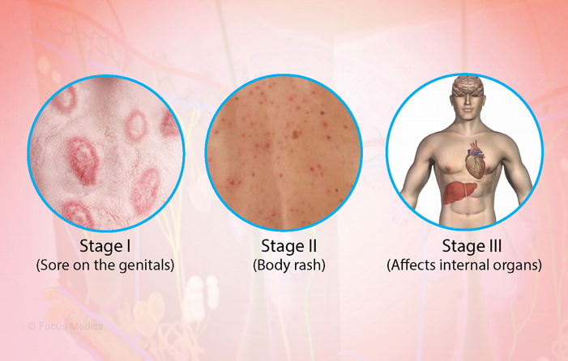

Syphilis
affects approximately 296 million people, including over 6 million children under the age of 5. Hepatitis B contributes to an estimated 820,000 deaths every year.
Is syphilis 100% curable?
Yes. Your healthcare provider can treat syphilis with antibiotics. Antibiotics will cure the infection, but there’s no way to repair organs damaged by syphilis.
How can I reduce my risk of getting syphilis?
The only way to prevent syphilis (and other STIs) is to abstain from sex. If you’re sexually active, you can reduce your risk of infection by always using a condom or dental dam during sex.
Is syphilis 100% curable?
Yes. Your healthcare provider can treat syphilis with antibiotics. Antibiotics will cure the infection, but there’s no way to repair organs damaged by syphilis.
How can I reduce my risk of getting syphilis?
The only way to prevent syphilis (and other STIs) is to abstain from sex. If you’re sexually active, you can reduce your risk of infection by always using a condom or dental dam during sex.
